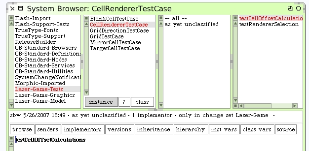

Do we have enough information to draw cell borders on our form now?
Well there's still the trick of knowing where the cell is on the form itself. Each cell knows its grid location but that needs to be translated into form-relative locations. The CellRenderer has enough information to work this out. It has the cell (by way of lookup using the cell location), the grid and the form. The renderer can calculate these offsets for us.
We can develop how this will work from a unit test.
For us to do this we'll need a form and a grid for our test. The GridTestCase has some nice code for creating a grid we can use in our tests. However we should not mix up our unit test designs. We could either cut-and-paste the code that created the test grid and put it into our test or maybe we could share that code. An easy way to do this would be to either put the test grid creation code into an abstract super class that the tests could be moved under as subclasses, or the code could be available somewhere else that both tests can reuse.
Here's something to consider. When our LaserGame morph first opens up for the user to play with it will need a grid layout. Sure we will want a randomizer and can use that whenever the game runs. But what if we created a grid generator that could answer random populated grids and a fixed populated grid we could use in our tests?